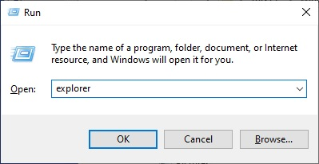

How to update blockly scriptcraft code
Hold the windows key and press r, Enter the command: explorer and press OK:

Navigate to the BlocklyPygame directory:
Enter the command cmd:
In the black screen, enter the command: git pull --all
It should then go to 100%
Note:
If it does not go to 100%, there could be a modified file in the directory:
In this case delete the entire C:\BlocklyPygame directory and perform the setup procedure: here